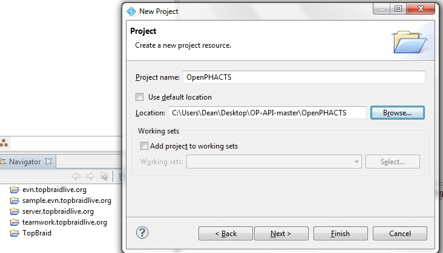

Installing the OpenPHACTS API modules in TopBraid Composer
Install TopBraid Composer Maestro Edition.
You can get a trial version here. Make sure you have the Maestro edition, so that you can use SPARQLMotion.
Download the modules from GIT
The OpenPHACTS modules are available on GitHub. Download the zip file and extract it somewhere on your local disk.
Create a project in TopBraid Composer
Right-click in the Navigator and select New>Project>General>Project. Call your projecct "OpenPHACTS". Instead of using the default location for a new project (unclick that box), navigate to the directory where you unzipped the module files. Navigate to the folder called "OpenPHACTS" (see image)

Install your API keys
You will need an application ID and key to operate the OpenPHACTS API. You can get your keys from the OpenPHACTS Developer Site. Click on "Get my API keys!" and follow the instructions.
You can install your API keys in your SPARQLMotion installation by editing the file keys/PHACTS.key.ttl. The relevant part of the file to edit is at the end:
PHACTS:MyKey
rdf:type keymodel:Key ;
rdfs:label "My key"^^xsd:string ;
keymodel:id "XXXXXXXX"^^xsd:string ;
keymodel:key "xxxxxxxxxxxxxxxxxxxxxxxxxxxxxxxx"^^xsd:string .
Replace XXXXXXXX with your appliction ID and xxxxxxxxxxxxxxxxxxxxxxxxxxxxxxxx with your key. In TopBraid Composer, refresh your project by right-clicing and selecting "Refresh".
Your OpenPHACTS modules are now ready to use.
Next: Hello World - your first OpenPHACTS SPARQLMotion script